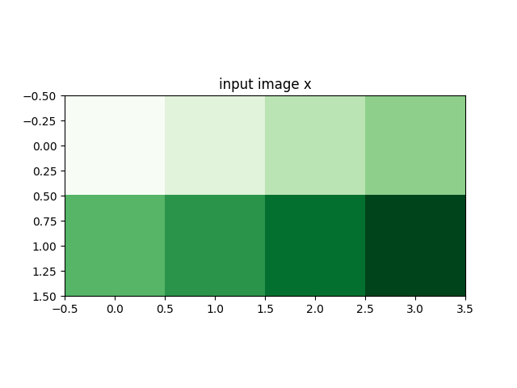
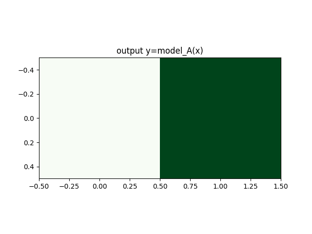

Note
Go to the end to download the full example code.
The use of Image2D#
This script demonstrates the use of Image2D for domain and range geometries in CUQIpy forward models. The settings of this geometry, in particular the so-called visual_only flag, depend on how the forward model input is operated on in the forward model. visual_only flag tells the geometry to interpret the variable as a 2D image only when visualizing the variable but keep it as a vector when being operated on in the forward model. Generally, if the forward operator expects an image input, set visual_only to False, which is the default in CUQIpy. Otherwise, if it expects a vector input, set visual_only to True in the domain geometry. In the same way, the range geometry visual_only setting should be consistent with your forward operator output.
Import necessary libraries
import cuqi
import numpy as np
import matplotlib.pyplot as plt
Define dimensions
dim_x, dim_y = 2, 4
- Example illustrating the default behavior: visual_only=False
With visual_only=False, the underlying structure of a CUQI array or sample will be reshaped to the shape of the specified geometry, i.e., an image of size (dim_x, dim_y), before being passed to the model. Here we intend to define a forward operator that downsamples the input image by a factor of 2. It’s easier to define such a forward operator in terms of an image. We do not need to explicitly set visual_only to
False because it is the default behavior.
def forward_func_a(image):
assert image.shape == (dim_x, dim_y)
return image[::2, ::2]
model_A = cuqi.model.LinearModel(forward_func_a,
domain_geometry=cuqi.geometry.Image2D((dim_x, dim_y)),
range_geometry=cuqi.geometry.Image2D((dim_x // 2, dim_y // 2)))
print(model_A)
x_sample = cuqi.array.CUQIarray(np.linspace(0, 1, dim_x * dim_y),
geometry=cuqi.geometry.Image2D((dim_x, dim_y)))
# Plot the original sample
plt.figure()
x_sample.plot(cmap='Greens')
plt.title("input image x")
# Apply the model and plot the result
plt.figure()
y_sample = model_A @ x_sample
y_sample.plot(cmap='Greens')
plt.title("output y=model_A(x)")
- 
- 
CUQI LinearModel: Image2D[8: (2, 4)] -> Image2D[2: (1, 2)].
Forward parameters: ['image'].
Text(0.5, 1.0, 'output y=model_A(x)')
Example with visual_only=True With visual_only=True, the underlying structure of a cuqi array or sample will not be changed before being passed to the model. This is useful when the model expects a vector input. Here we define a forward operator that reverses the input vector, which can be easily defined in terms of a vector.
def forward_func_b(x):
assert x.shape == (dim_x * dim_y, )
return x[::-1]
model_B = cuqi.model.LinearModel(forward_func_b,
domain_geometry=cuqi.geometry.Image2D((dim_x, dim_y), visual_only=True),
range_geometry=cuqi.geometry.Image2D((dim_x, dim_y), visual_only=True))
# Note we explicitely set the `visual_only` flag to be `True` here.
print(model_B)
# Apply the model and plot the result
plt.figure()
y_sample = model_B @ x_sample
y_sample.plot(cmap='Greens')
plt.title("output y=model_B(x)")
CUQI LinearModel: Image2D[8] -> Image2D[8].
Forward parameters: ['x'].
Text(0.5, 1.0, 'output y=model_B(x)')
Total running time of the script: (0 minutes 0.141 seconds)